Guía paso a paso para guardar, organizar y compartir los documentos de OxoHotel en el Repositorio de Documentos.
Repositorio de Documentos · OxoHotelVersión 1.0 · Octubre 2026
Contenido
1¿Qué es OXO Docs y para qué sirve?
2Cómo ingresar y crear tu cuenta
3Conoce la pantalla principal
4Navegar por hoteles, áreas y carpetas
5Organizar: crear áreas y carpetas
6Subir documentos
7Decidir quién puede ver cada archivo
8Favoritos y recientes
9Administración de usuarios y registro de actividad
10Tu perfil y preferencias
11Buenas prácticas para organizar tu área
12Preguntas frecuentes
¿Dónde encuentro este manual?
En el aplicativo, abajo de la barra lateral izquierda, está el botón con el icono (i) llamado Manual de usuario. Al pulsarlo se abre este documento en una pestaña nueva.
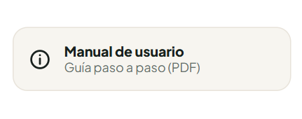
Figura 1. Botón Manual de usuario en la parte inferior de la barra lateral.
1¿Qué es OXO Docs y para qué sirve?
OXO Docs es el repositorio central de documentos de OxoHotel: un solo lugar, ordenado por hotel y por área, donde se guardan los archivos importantes de la compañía.
Cuando los documentos viven solo en un computador personal o en un correo, se pierden cuando la persona cambia de cargo o se retira. OXO Docs resuelve esto: cada persona sube a la carpeta de su área los documentos que maneja según su cargo y responsabilidad, y así la información queda disponible para el equipo, con el control de acceso que corresponda.
Centralizado
Todos los hoteles y el corporativo en un mismo lugar, con la misma estructura de navegación.
Ordenado por área
Cada área (Finanzas, IT, Jurídico, Operaciones…) organiza sus carpetas como mejor le funcione.
Con control de acceso
Quien sube un archivo decide si lo ve toda la empresa, solo un grupo o personas específicas.
Cómo está organizado
Módulos: Hoteles en operación, Hoteles en pre-apertura, Hoteles en desarrollo y Corporativo.
Hotel: cada hotel (o el Corporativo) tiene sus propias áreas.
Área: departamento o proceso, por ejemplo Alimentos y Bebidas, CAF, IT, Jurídico.
Carpetas y subcarpetas: la estructura interna que define cada líder de área.
Archivos: los documentos (Excel, Word, PDF, PowerPoint, imágenes, etc.).
Roles
Lo que puedes hacer depende de tu rol, que asigna un administrador:
Acción
Usuario
Administrador
Superadministrador
Ver y abrir documentos a los que tienes acceso
Sí
Sí
Sí
Subir documentos
Sí
Sí
Sí
Crear áreas y carpetas, renombrar y eliminar
—
Sí
Sí
Gestionar usuarios y ver el registro de actividad
—
Sí
Sí
Cambiar el rol de otras personas
—
—
Sí
Si no ves un botónAlgunos botones (como Nueva Carpeta o Nueva Área) solo aparecen según tu rol. Si necesitas usarlos, solicita el permiso a un administrador.
2Cómo ingresar y crear tu cuenta
OXO Docs está disponible en la Intranet corporativa. Ábrelo desde el navegador de tu computador.
Iniciar sesión
Escribe tu correo electrónico corporativo (@oxohotel.com).
Escribe tu contraseña.
Pulsa Iniciar Sesión. Si marcas Recuérdame, la sesión se conserva en ese equipo.
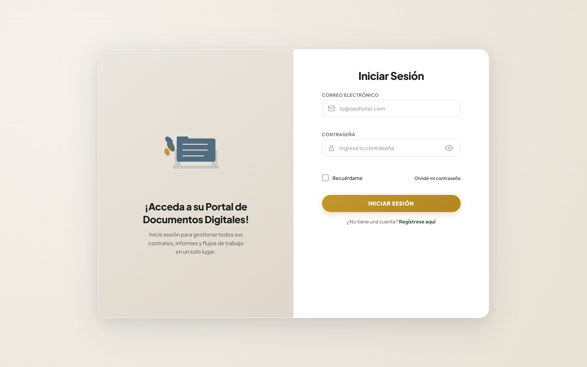
Figura 2. Pantalla de inicio de sesión.
Crear tu cuenta (primera vez)
En la pantalla de inicio, elige Crear Cuenta.
Completa tu nombre, tu correo corporativo y una contraseña de al menos 8 caracteres; repítela para confirmarla.
Te llegará un código de verificación por correo (vale 15 minutos). Escríbelo en el aplicativo para confirmar tu cuenta.
Un administrador revisará y aprobará tu acceso. Cuando esté aprobado podrás iniciar sesión.
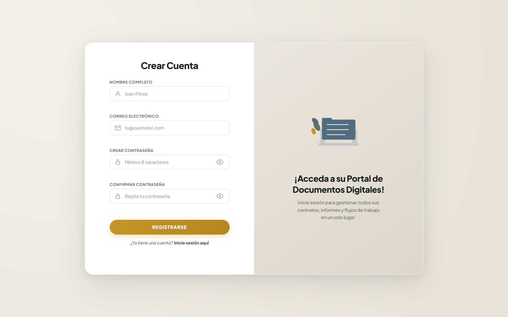
Figura 3. Formulario para crear una cuenta.
Mensajes que puedes ver“Debes verificar tu correo antes de iniciar sesión”: falta ingresar el código recibido. “Tu cuenta está pendiente de aprobación”: espera a que un administrador te dé acceso.
3Conoce la pantalla principal
Al iniciar sesión llegas al Inicio, con un resumen de lo que usas más.
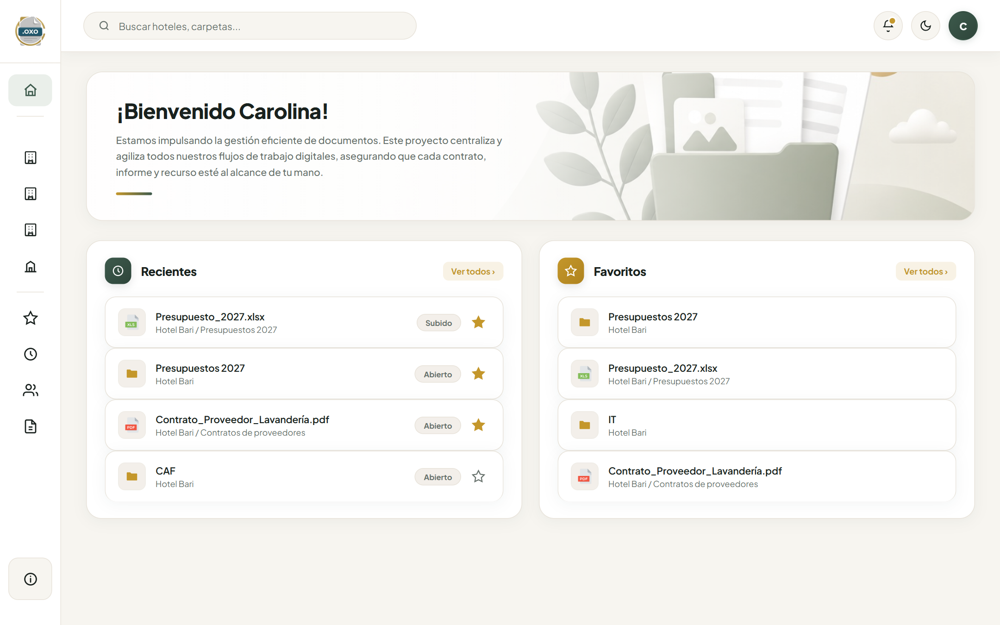
Figura 4. Inicio: saludo, documentos Recientes y carpetas o archivos Favoritos.
La barra lateral
Es el menú principal. Al pasar el cursor sobre ella se expande y muestra los nombres:
Inicio: vuelve al resumen.
Hoteles en operación, pre-apertura, en desarrollo y Corporativo: despliegan la lista de hoteles de cada módulo; pulsa un hotel para ver sus áreas.
Favoritos y Recientes: accesos rápidos (ver sección 8).
Usuarios y Logs: solo para administradores (ver sección 9).
Manual de usuario (i): abre esta guía.
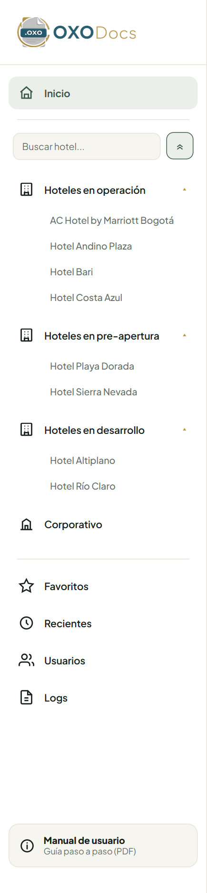
Figura 5. Barra lateral expandida.
La barra superior
Buscador “Buscar hoteles, carpetas…”: encuentra hoteles, carpetas y archivos desde cualquier pantalla.
Campana: notificaciones.
Luna: cambia entre modo claro y oscuro.
Tu inicial (círculo verde): abre el menú de tu perfil y el cierre de sesión.
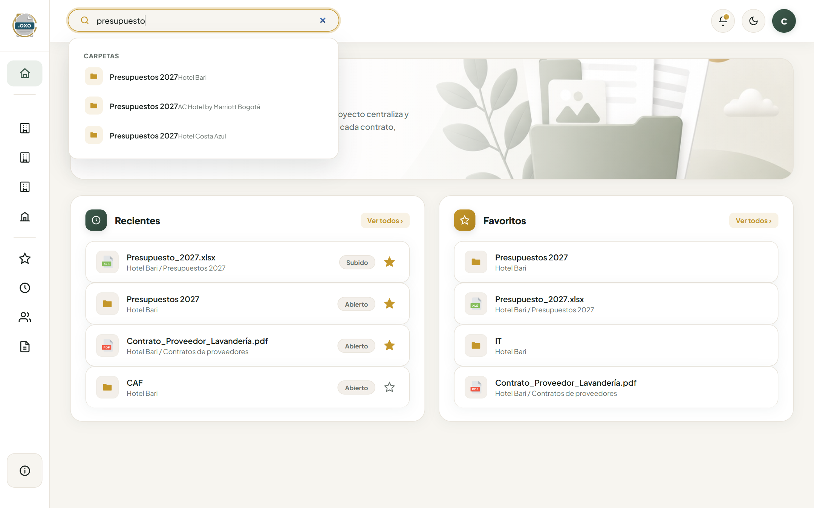
Figura 6. Búsqueda desde la barra superior: escribe parte del nombre y elige el resultado.
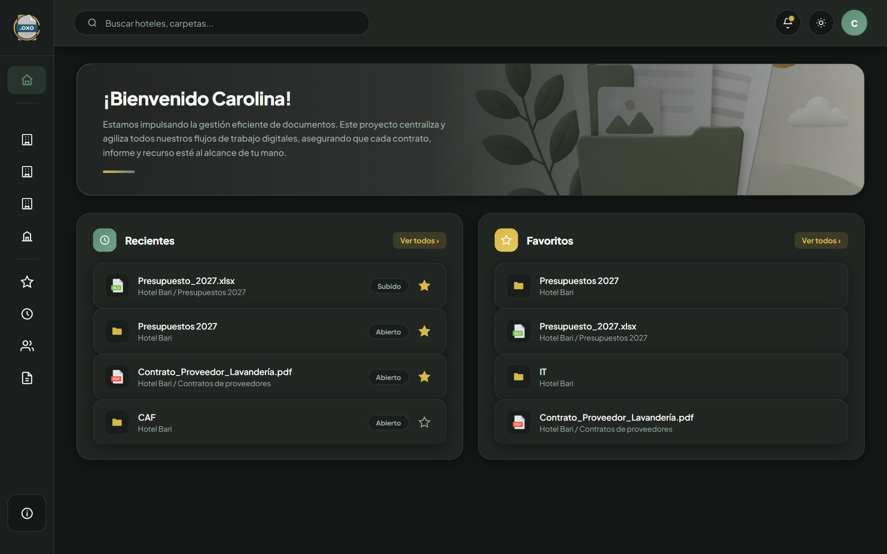
Figura 7. El mismo Inicio en modo oscuro.
4Navegar por hoteles, áreas y carpetas
Entrar a un hotel y ver sus áreas
En la barra lateral, abre el módulo (por ejemplo Hoteles en operación).
Pulsa el hotel que quieres consultar. Verás sus áreas como tarjetas.
Pulsa un área para entrar a sus carpetas y archivos.
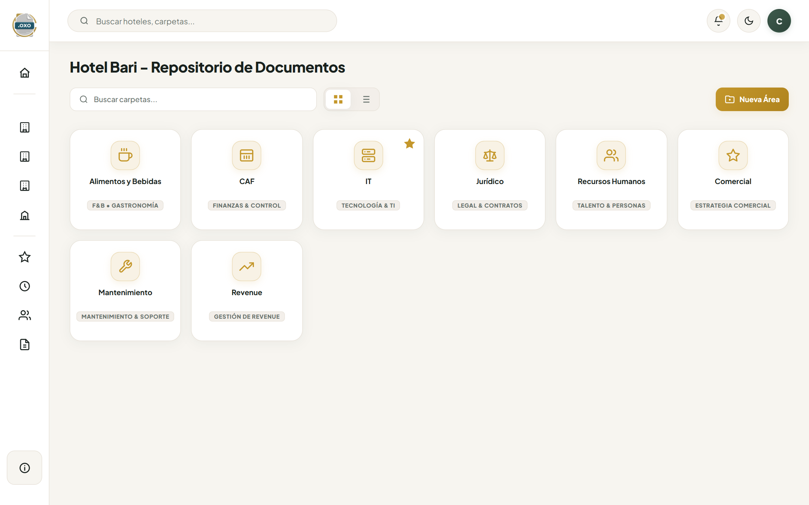
Figura 8. Áreas de un hotel. Usa Buscar carpetas… para filtrarlas y alterna entre vista de tarjetas y de filas.
Dentro de una carpeta
La ruta de navegación (Hotel / Área / Carpeta) te dice dónde estás. Pulsa cualquier nivel para volver a él, o usa la flecha < para subir un nivel.
Pulsa una subcarpeta para entrar. Pulsa un archivo (o el icono de la esquina) para abrirlo en Google Drive.
La estrella marca la carpeta o el archivo como favorito.
Buscar archivos… filtra lo que ves en la carpeta actual.
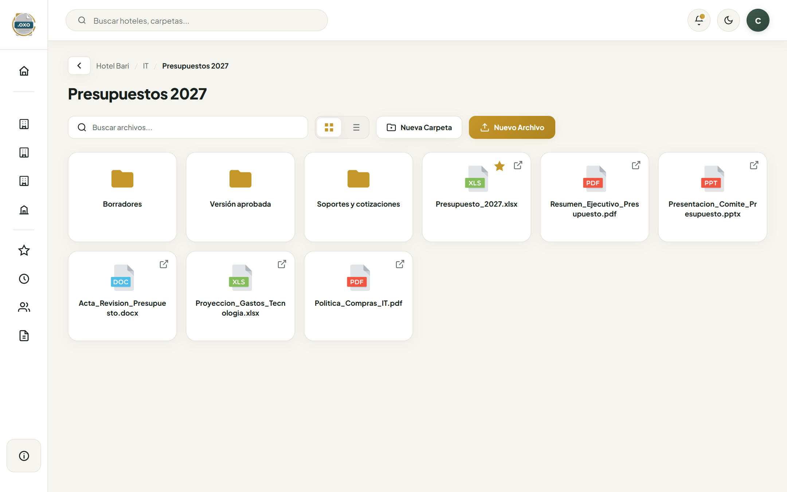
Figura 9. Contenido de una carpeta con su ruta de navegación y los botones Nueva Carpeta y Nuevo Archivo.
5Organizar: crear áreas y carpetas
Cada líder de área define la estructura de carpetas de su área y es responsable de mantenerla ordenada. Estas acciones están disponibles para administradores.
Crear una carpeta o subcarpeta
Entra a la carpeta donde quieres crear la nueva.
Pulsa Nueva Carpeta.
Escribe el nombre (por ejemplo Contratos 2026) y pulsa Crear.
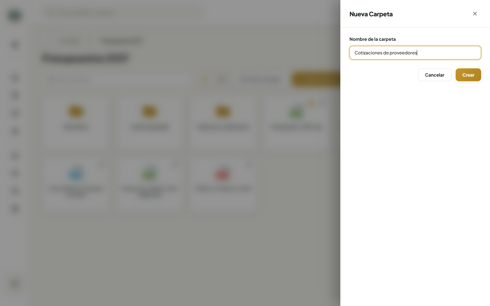
Figura 10. Panel lateral para crear una carpeta.
Crear un área nueva en un hotel
Desde la vista del hotel, pulsa Nueva Área, escribe el nombre (por ejemplo Mantenimiento) y confirma.
Renombrar o eliminar
Las tarjetas de carpeta muestran, para quien tiene permiso, botones de renombrar (lápiz) y eliminar (papelera).
Eliminar es definitivoAl eliminar una carpeta se borra también todo lo que contiene (subcarpetas y archivos), tanto en el aplicativo como en Google Drive. Se pide confirmación antes de hacerlo.
6Subir documentos
Puedes subir archivos desde tu computador o traerlos desde tu Google Drive. En ambos casos se guardan en la carpeta donde estás parado.
Desde tu computador
Entra a la carpeta de destino y pulsa Nuevo Archivo.
En Desde Computadora, arrastra los archivos al recuadro o haz clic para elegirlos. Puedes seleccionar varios (hasta 15 MB cada uno) y usar + Agregar más o Quitar todos.
Si quieres limitar quién lo ve, usa Restringir Acceso (sección 7). Si no, quedará visible para todos los que tengan acceso al hotel.
Pulsa Subir Archivo(s) y espera a que termine.
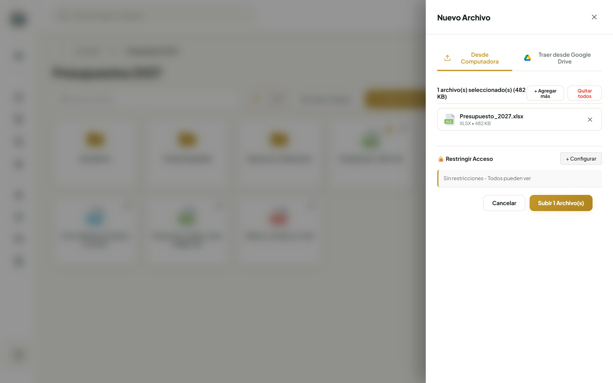
Figura 11. Panel Nuevo Archivo con un archivo seleccionado.
Mientras sube, no cierres la ventanaEl panel se bloquea hasta que termina la subida, y el navegador te avisa si intentas cerrar o recargar la pestaña. Al finalizar verás un mensaje de confirmación; si algún archivo falla, se indica cuál.
Desde Google Drive
En Nuevo Archivo, abre la pestaña Traer desde Google Drive.
Pulsa Abrir Explorador de Drive y elige uno o varios archivos (Mi unidad, Unidades compartidas, Compartido conmigo, Reciente o Destacados). La primera vez te pedirá autorizar el acceso con tu cuenta de Google.
También puedes pegar el enlace de un archivo de Drive.
Define quién puede verlos en Restringir Acceso y pulsa Migrar … Archivo(s) de Drive.
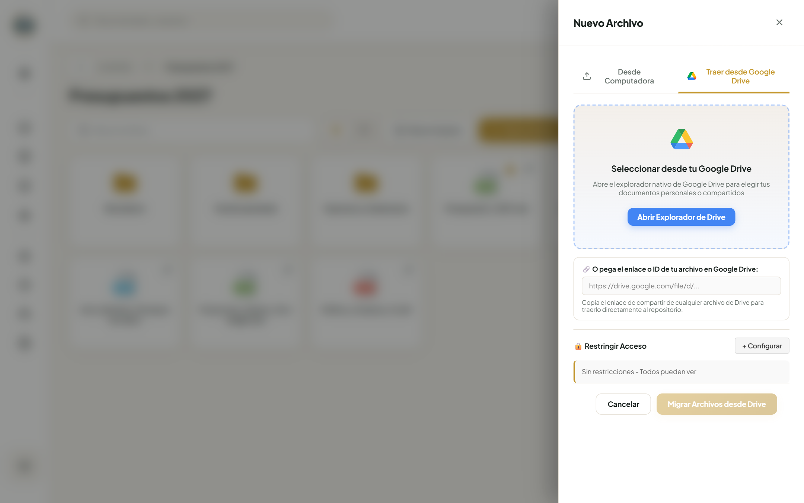
Figura 12. Pestaña Traer desde Google Drive.
Se copia, no se mueveLos archivos de Drive se copian a OXO Docs; el original sigue en tu Drive sin cambios.
7Decidir quién puede ver cada archivo
Al subir un archivo, la sección Restringir Acceso te permite controlar quién lo puede ver. Por defecto dice “Sin restricciones – Todos pueden ver”.
En el panel Nuevo Archivo, pulsa + Configurar.
Elige una de las cuatro opciones de Privacidad del archivo y pulsa Aplicar.
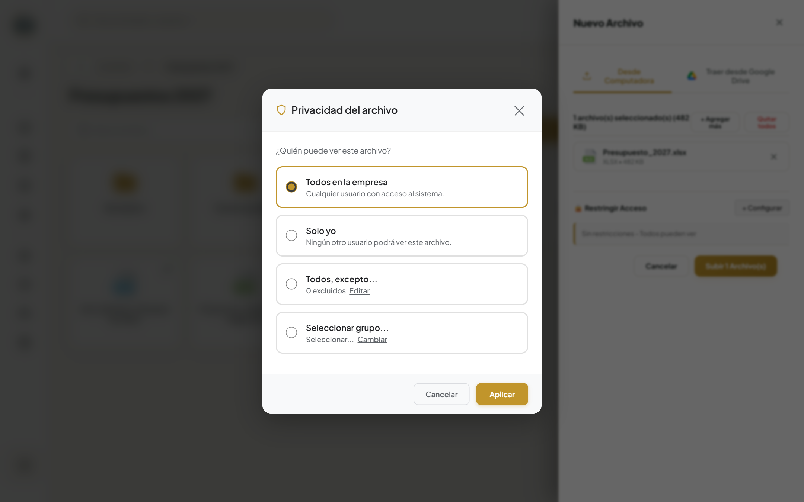
Figura 13. Opciones de privacidad.
Opción
Qué significa
Todos en la empresa
Cualquier usuario con acceso al sistema puede ver el archivo.
Solo yo
Ningún otro usuario podrá verlo.
Todos, excepto…
Lo ven todos menos las personas que marques.
Seleccionar grupo…
Lo ve únicamente el grupo que elijas (por ejemplo, Dirección IT).
Usar un grupo
Un grupo es una lista de personas que defines una vez y reutilizas. En Seleccionar grupo… pulsa Cambiar: verás Mis Grupos. Elige uno de la lista o crea uno con Crear nuevo grupo (nombre y personas que lo integran). La papelera elimina un grupo.
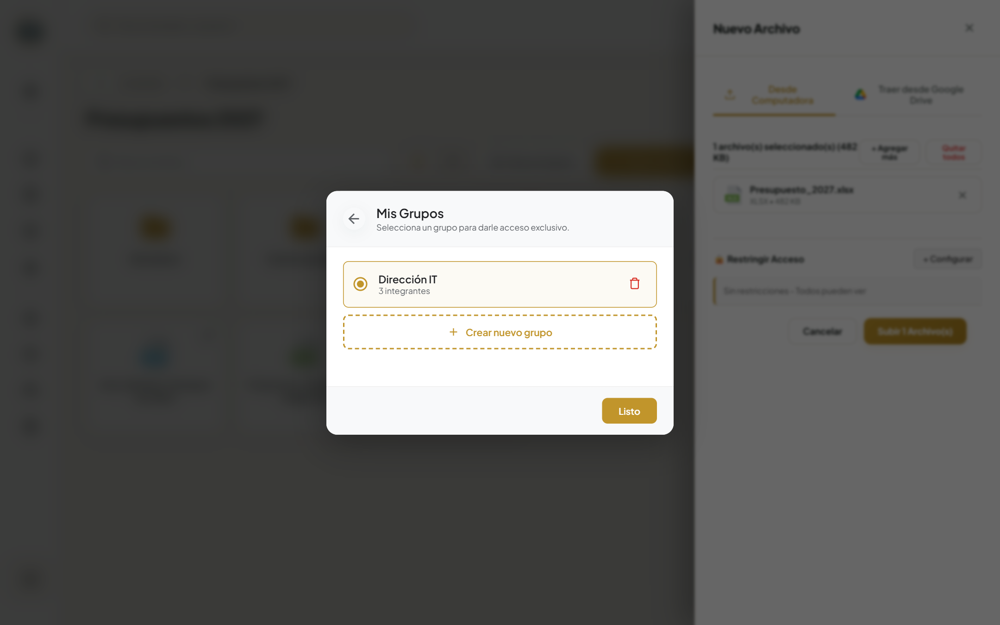
Figura 14.Mis Grupos: selecciona un grupo para darle acceso exclusivo.
Excluir personas específicas
En Todos, excepto… pulsa Editar, marca a quienes no podrán ver el archivo (puedes buscar por nombre o correo) y pulsa Listo.
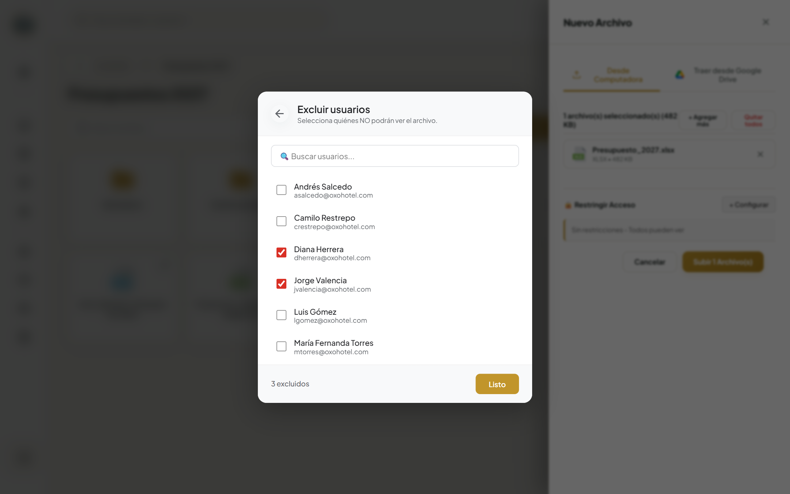
Figura 15.Excluir usuarios: marca quiénes no podrán ver el archivo.
Confirmar
Al pulsar Aplicar, el panel Nuevo Archivo muestra el resumen de la restricción (por ejemplo “Solo el grupo: Dirección IT”) y la lista de personas sin acceso. Revísalo antes de subir.
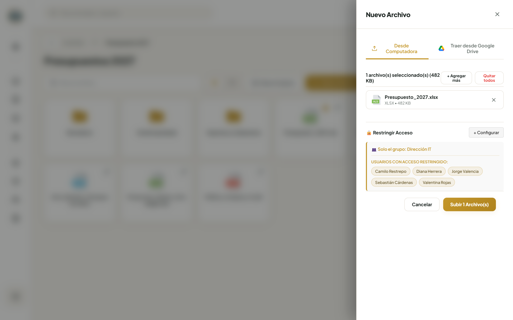
Figura 16. Resumen de la restricción aplicada.
Quién siempre lo veLa persona que sube el archivo siempre tiene acceso a él. Las restricciones se aplican de inmediato: quien está excluido no verá el archivo al entrar a la carpeta.
8Favoritos y recientes
Favoritos
Marca con la estrella las carpetas o archivos que usas con frecuencia (en una tarjeta de carpeta, en un archivo o en la propia lista de favoritos). Aparecen en el apartado Favoritos de la barra lateral y en el widget del Inicio. Pulsa una tarjeta para abrirla directamente en su ubicación; para quitarla, vuelve a pulsar la estrella.
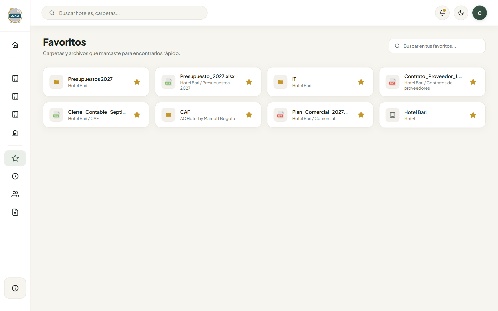
Figura 17. Apartado Favoritos.
Recientes
Recientes lista lo último que abriste o subiste, para retomar tu trabajo sin buscar de nuevo. Pulsa un elemento para ir a él.
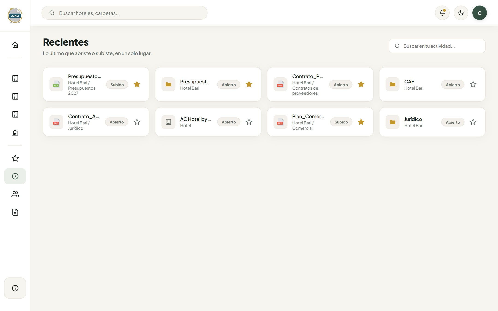
Figura 18. Apartado Recientes.
9Administración de usuarios y registro de actividad
Estos apartados aparecen en la barra lateral solo para administradores y superadministradores.
Usuarios
Muestra quiénes tienen acceso, su correo, rol, estado y a qué hoteles pueden entrar. Desde aquí un administrador puede:
Aprobar cuentas nuevas pendientes de aprobación.
Crear un usuario con el botón Nuevo Usuario.
Asignar hoteles: definir a qué hoteles tiene acceso cada persona (o todos).
Cambiar el rol (solo el Superadministrador).
Restablecer la contraseña (icono de llave) y activar o desactivar una cuenta (icono de encendido).
Buscar por nombre o correo con el buscador de la parte superior.
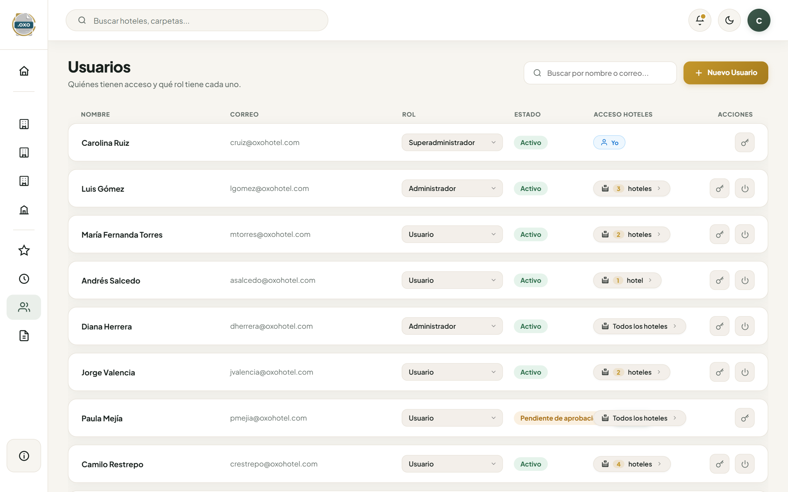
Figura 19. Apartado Usuarios.
Logs
Es el registro de auditoría: qué acciones se hicieron, quién las hizo y cuándo (inicios de sesión, subidas, cambios). Sirve para revisiones y seguimiento. Tiene buscador para filtrar por usuario, acción o fecha.
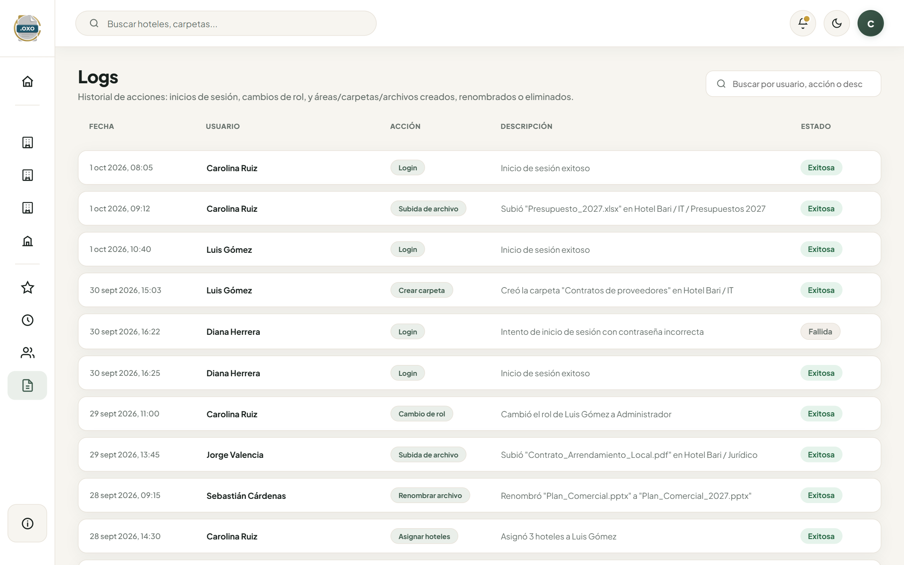
Figura 20. Apartado Logs.
10Tu perfil y preferencias
Pulsa tu inicial en la esquina superior derecha y entra a Mi Perfil. Allí puedes:
Ver tu información personal (nombre, correo y fecha de registro) y editar tu nombre.
Cambiar tu contraseña: escribe la actual, la nueva y confírmala.
Ajustar tus preferencias de notificaciones.
Para salir, usa Cerrar sesión en el mismo menú, sobre todo si compartes el equipo.
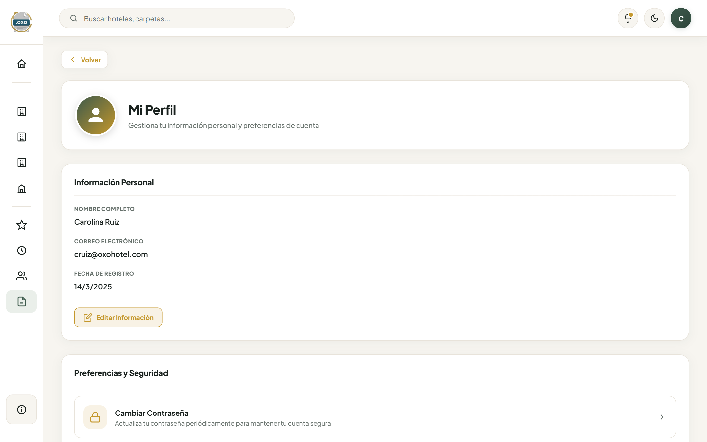
Figura 21. Mi Perfil.
11Buenas prácticas para organizar tu área
La utilidad de OXO Docs depende de que cada área mantenga su espacio completo y ordenado.
Define una estructura propia y simple. Cada líder de área decide cómo organizar sus carpetas (por proceso, por año, por proveedor, etc.) y la comparte con su equipo.
Hazte responsable de mantenerla. Designa quién sube qué, y revisa periódicamente que no haya archivos sueltos o duplicados.
Sube lo importante según tu cargo. Contratos, presupuestos, informes, políticas, actas y todo documento que otra persona necesitaría si tú no estuvieras.
Usa nombres claros. Incluye tema, año y versión: Presupuesto_2027_v2.xlsx es mejor que Nuevo (3).xlsx.
Restringe solo lo necesario. Usa grupos para documentos sensibles; evita bloquear lo que el equipo necesita consultar.
Sube al terminar el trabajo, no “después”. Un documento que queda en tu computador es un documento en riesgo.
Al cambiar de cargo o retirarte, verifica que tus documentos vigentes estén en la carpeta de tu área y avisa a quien te reemplaza dónde están.
12Preguntas frecuentes
No veo el botón “Nueva Carpeta” o “Nueva Área”.
Esos botones aparecen según tu rol. Solicita a un administrador el permiso de gestión de carpetas.
Me aparece “No tienes permiso…” aunque sí debería tenerlo.
Probablemente tu sesión lleva mucho tiempo abierta. Cierra sesión y vuelve a iniciar para renovarla.
Subí un archivo y no lo veo en la carpeta.
Recarga la carpeta o vuelve a entrar. Si quedó restringido, solo lo verán las personas con acceso. Revisa también en Recientes si se registró la subida.
Aparece un mensaje de error de conexión.
Ocurre a veces de forma momentánea con el servidor. Espera unos segundos y repite la acción; si persiste, recarga la página (Ctrl + Shift + R).
¿Qué tamaño y tipos de archivo puedo subir?
Hasta 15 MB por archivo desde el computador, en los formatos habituales (Excel, Word, PDF, PowerPoint, imágenes, etc.). Para archivos más grandes, súbelos a Google Drive y tráelos con la opción Traer desde Google Drive.
¿Puedo recuperar un archivo o carpeta eliminado?
La eliminación en OXO Docs es definitiva. Por eso solo la realizan los administradores y se pide confirmación. Si ocurrió por error, escribe cuanto antes a developersit@oxohotel.com.
¿A quién acudo si necesito ayuda?
Escribe al equipo de Tecnología de OxoHotel: developersit@oxohotel.com. Cuéntanos qué intentabas hacer y, si puedes, adjunta una captura de pantalla del mensaje que ves. También puedes volver a este manual desde el botón (i) de la barra lateral.